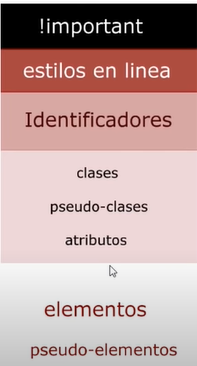

Con la especificidad, se refiere a la forma en la que CSS soluciona los casos de conflicto en la que en un mismo documento HTML tenga uno o varios archivos enlazados de CSS, que cuando estos apliquen los estilos al documento HTML y hayan una o más instrucciones a un mismo elemento. Como hace CSS para dar prioridad a una instrucción por encima de otra.
Para ver como CSS aplica las jerarquias Ir al siguiente de la pagina de Uniwebsidad que explica más detalladamente como se aplica la lógica de las instrucciones en CSS.
En la siguiente imagen se muestra de manera grafica la jerarquia que establece CSS.
Sin más nada que agregar que no se explique en la pagina anteriormente mencionada pues seguiremos. En la siguiente clase veremos una metodología para que utilizemos los estilos en CSS de manera adecuada.
Metodología BEM